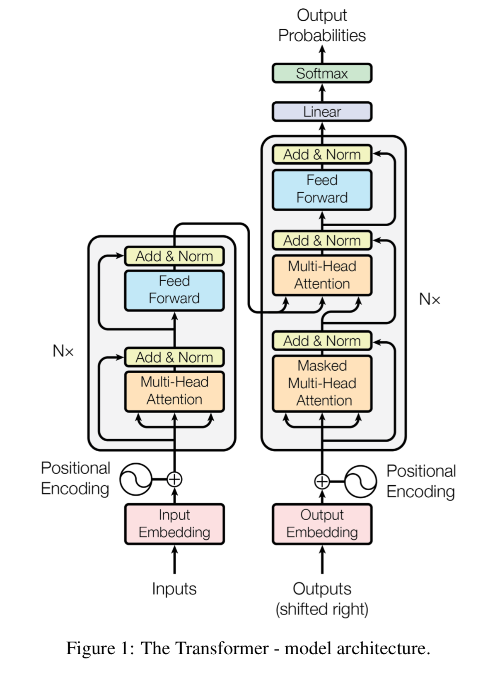
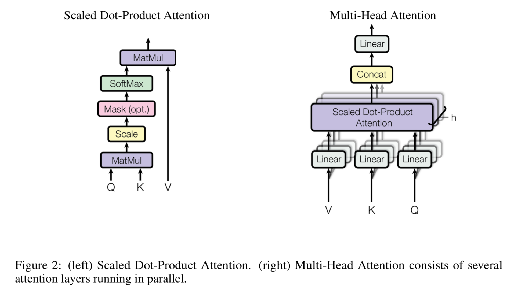

2019 论文阅读笔记 <03>
【基本信息】
- 论文题目：Attention is all you need
- 作者：Ashish Vaswani, Noam Shazeer, Niki Parmar, Jakob Uszkoreit, Llion Jones, Adian N. Gomez, Łukasz Kaiser, Illia Polosukhin
- 出版： Advances in Neural Information Processing Systems 30 (NIPS 2017)
- 日期：Submitted on 12 Jun 2017 （*v1*）, last revised 6 Dec 2017 （this version, v5）
- 简介：此论文针对以往NLP中使用RNN结构和endoder-decoder结构无法并行、速度慢的问题，基于注意力机制提出了一种称为Transformer的网络结构。
【词汇术语】
专业词汇/术语
- sequence transduction models
- attention mechanism: 注意力机制
语言词汇
- push the boundaries
- integral 必需的
模型/模式/算法
- softmax
- softmax用于多分类过程中，它将多个神经元的输出，映射到（0,1）区间内，可以看成概率来理解，从而来进行多分类
- $S_i=\frac{e^i}{\sum_je^j}$
【论文笔记】
「简介前言」
当前缺陷
- RNN
- 前后状态的依赖性导致无法并行，在较长的词序时运行缓慢
- 当前努力
- 分解（factorization tricks）, 条件计算（conditional computation）
- Neural GPU，ByteNet 和 ConvS2S
- 按序计算的限制仍然存在
注意力机制（Attention Mechanisms）
- 注意力机制（Attention Mechanisms）
- 各种序列模型建模和转换模型中的一个组成部分（an integral part of compelling sequence modeling and transduction models in various tasks）
- 可以不用考虑在输入输出序列中的距离而允许建模
- 在少量情况，和循环网络结合使用
- 自注意力机制（Self-attention，intra-attention）
- 把输入序列上不同位置的信息联系起来计算一个句子的表示内容
「Transformer模型」
Encoder-Decoder
结构图

Encoder
- 由6个基本层堆叠
- 每层含有两个子层：
- 注意力机制（multi-head self-attention mechanism）
- 全连接前向网络（simple, position-wise fully connected feed-forward network）
- 在两个子层中都有剩余连接（residual connection）和层标准化（layer normalization）
- 子层的输出：$LayerNorm(x+Sublayer(x))$
Decoder
- 在encoder的输出外再增加了一层注意力机制
- 掩饰（masking）
- 确保每个位置的预测只基于前面已知位置的词
注意力机制（Attention）
注意力机制
- 将一个查找和一组键值对映射到正确的输出（mapping a query and a set of key-value pairs to an output）

Scaled Dot-Product Attention
- $Attention(Q,K,V)=softmax(\frac{QK^T}{\sqrt{d_k}})V$
- $d_k$：keys的维度；$d_v$：value的维度
- $Q$：查询矩阵；$K$：keys的矩阵；$V$：values的矩阵
Multi-Head Attention
- $MultiHead(Q,K,V)=Concat(head_1,…,head_h)W^{\bigcirc}$
- $head_i=Attention(QW_i^Q,KW_i^K,VW_i^V)$
文章使用的注意力机制
- Multi-Head Attention，三个方面：
- Encoder-Decoder Attention层
- 查询来自前一个decoder层，允许decoder的每个位置都能关注输入的所有位置
- Encoder层中的Self-attention层
- 在self-attention层中所有的key、value和query都来自前一层的encoder，encoder的每个位置都能关注前一层输出的所有位置。
- Decoder层中的Self-attention层
Position-wise Feed-Forward Networks
- 每一层都有一个fukky connected feed-forward network
- $FNN(x)=\max(0,xW_1+b_1)W_2+b_2$
- 两个线性转换，中间一个ReLU
Embeddings and Softmax
位置编码（Positional Encoding）
- 不使用递归结构和卷积结构，引入位置编码来使用输入顺序信息
- 位置编码：
- $PE_{(pos,2i)}=\sin(pos/10000^{2i/d_{model}})$
- $PE_{(pos,2i+1)}=\cos(pos/10000^{2i/d_{model}})$
- $pos$: position; $i$: dimension
- 使用sin版本，因为它允许序列用到更长
「为什么使用自注意力机制」
- 三个方面比较其与递归结构、卷积结构
- 每层的计算复杂度（total computational complexity per layer）
- 能被并行计算的数量（the amount of computation that can be parallelized）
- 网络中长范围以来的路径长度（the path length between long-range dependencies in the network）
「实验与结论」
- 同前文，不加以赘述，有兴趣可以自行查看论文以及相关代码。
「小记总结」
- 论文中为提高并行能力，引入注意力机制代替递归结构和卷积结构，用位置编码来体现句子顺序信息。换种思路实现位置表示，NICE～是否还有其他方法，或者还有其他的耗时处理可以用更为简洁的方法来代替处理呢？